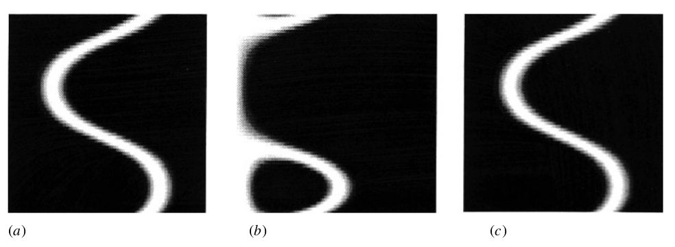
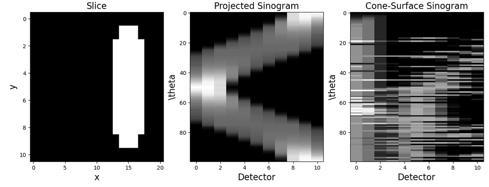

One of the first properties encountered in Compton camera image reconstruction is the cone-surface projection. Understandig the properties of this geometrical object will set the ground works for understanding more advanced models.
I was reading some articles of the early versions of the Compton camera image reconstruction procedure when I came across Ref.[1] talking about the cone-surface projections. They investigated a primitive version of a ‘‘Compton camera’’. Well, it kind of had some properties like a Compton camera like a scatterer and an absorber but they assumed that photons only scatter at a fixed given angle. This camera measures the cone-surface projection of a source. What this means is that the intensity measured at a given detector is proportional to the integral over the intersection of the cone and the source, given that the source is homogeneous. Specifically, let $f(\mathbf{x})$ denote the source distribution, $\mathbf{k}$ the cone axis making angle $\beta$ with $\mathbf{n}$ along the cone surface, they defined
$$ p(\mathbf{n}) = \int_0^\infty f(O+\mathbf{n}r)r\mathrm{d}r~~~~~~q_k(\beta) = \int_{S(\mathbf{k},\beta)}p(\mathbf{n})\mathrm{d}s. $$ Here $S(\mathbf{k},\beta)$ denotes the circle created by intersecting the cone with axis $\mathbf{k}$ and half-angle $\beta$ with the unit sphere, and $O$ the apex of the cone, describing the first interaction point with the scatterer. The quantity $q_{k}(\beta)$ is the cone-surface projection. It is reasonable that the cone-surface projections are at least proportional to the photon flux at the detector for a given scattering angle and cone axis.
Now, they showed a method to invert these equations to obtain the original source $f(\mathbf{x})$ via Legendre transforms. However, they also showed a figure in which these cone-surface projections were shown (figure 1). I wanted to try to recreate this figure.

Figure 1: The first two steps of image reconstruction. (a) Plane projections calculated directly from the phantom (b) Cone-surface projections (c) Plane projections evaluated by the algorithm from cone-surface integrals.
The cone-surface projections in (b) are calculated for scattering angle $\beta = \pi/4$, but they do not entail what cone axis is used or how it is chosen or how the sphere phantom is placed in the space.
Problem Statement#
I wanted to generate figure 1 (b), and what I can gather from the article we have:
- A spherical phantom with a radius of 10 mm offset some distance from the rotation axis (not given but looks like around 20 mm from figure 1 (a));
- Since they do not talk about specific detector elements I assume that they use all voxels along an axis in the plane perpendicular to the rotation axis. I will however define a set of detector elements along this axis;
- The cone-surface projection is then the total contribution of a cone with half-angle $\beta = \pi/4$ with some axis $\mathbf{k}$ (not explicitly given but I will take the one perpendicular to the rotation axis) with the spherical source.
Practical Issues and Result#
In Python I made two classes: voxelSpace and detectorSpace. The voxelSpace class handles the discretization of 3D space, which I call computational space, and places a sphere with some offset to the rotation axis in the computational space. In practice it associates the number 0 for each voxel outside the sphere and 1 for each voxel inside the sphere. The detectorSpace class handles the detector geometry and all functions needed to calculate the intersection of the cone with the sphere. I calculated the intersection the same as the method presented in Ref. [2].
The first program prototype was fantastically slow and would not yield anything. Some rewriting and parallelizing the code with the help of Ref. [3,4] made it much faster but still incredibly slow. I thought it was the rotation that took the longest so I wrote a separate rotation method based on Ref. [5]. In the end I could produce figure (2).

Conclusion#
Well, the generated cone-surface projection in figure 2 look kind of similar to the ones in figure 1, if I squint. The image in figure 1 was produced for a very rough voxel grid and very few detectors. It took around 20 seconds to get the image in figure 2. The Python code that I wrote scales very poorly. Increasing the resolution of the voxel grid to twice the resolution in figure 2 takes approximately four times as long to calculate.
I think the main bottleneck is the indicator function in the detectorSpace class, which is based on the one in Ref. [2]. It check each voxel that is touched by the sphere and determines if that voxel also is contained on the surface of the sphere. I do not know how to do it more efficiently at this moment but I think this is where one should look for improvements first.
The code is available on my Github account
References#
[1] Application of spherical harmonics to image reconstruction for the Compton camera, Basko, Roman; Zeng, Gengsheng; Gullberg, Grant T, Link
[2] A model of spatial resolution uncertainty for Compton camera imaging, Yanting Ma , Joshua Rapp, Petros Boufounos, Hassan Mansour, Link
[3] Parallel programming in Python - multiprocessing (Pool and apply_async methods), Xin Li, Link
[4] Parallel programming in Python - multiprocessing (Process and Queue), Xin Li, Link [5] Rotation of Voxels in 3D Space using Python, Kok Wei Chew, Link